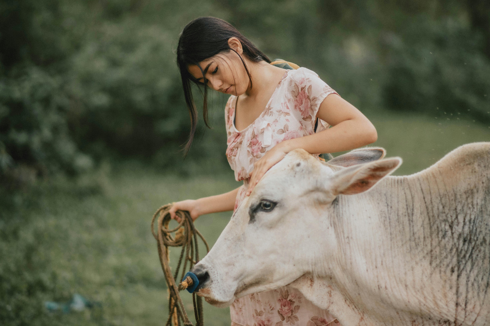
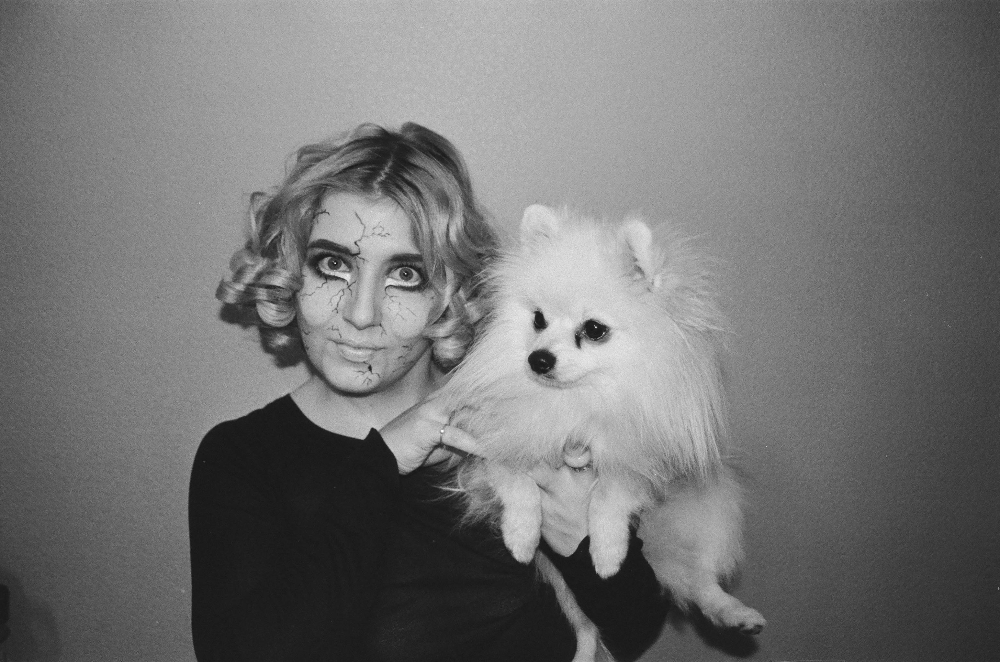

<!DOCTYPE html>
<html lang="en">
<head>
<meta charset="UTF-8" />
<meta name="viewport" content="width=device-width, initial-scale=1.0" />
<meta http-equiv="X-UA-Compatible" content="ie=edge" />
<title>J's Photography</title>
<link rel="stylesheet" href="style.css" />
</head>
<body>

</body>
</html>

<html>
  <head>
    <title>J's Photography</title>
    <link href="main.css" rel="stylesheet" type="text/css">
  </head>
  <body>
    
    <div class="header"> 
      <h1 class="blog-title">J's Photography</h1>
    </div>
    
    <div class="navigation">
      <a href="index.html" class="nav-link">Photography Feed</a>
      <a href="about.html" class="nav-link">About</a>
      <a href="stories.html" class="active nav-link">Stories</a>
      <p>                                  <p></p>
        <p> _____________________________<p>
            <p>                                  <p>
      <a href="photooftheyear.html" class="nav-link">Photo of The Year</a>
    </div>

    <div class="main-content">
      <div class="section blog-post">
        <h2 class="heading-blog">Photography Stories</h2>
        <div class="blog-content">

          <p>                                                               </p>
          

          <p>I am a Photgrapher located in Berlin, Germany. I enjoy photograpy! I have dedictaed my whole life to photography. My favourite things to do is take pictures of are animals! My most popular photo I have taken is "Cow on Other Hill". I have always had a dream to go on a holiday to Hollywood. I grew up poor and never had enough money to travel. Photgraphy has helped me, and I can now go on my Hollywood holiday!<h5>
          <h4>👤 Bennie Rawley<h4>

          <h3>___________________________________________________________________________________________________________<h3>

            <p>                                                               </p>
            

            <h5>I could remember when I was just a little boy and always had loved taking my mother's camera to take pictures of literlly everthing! I have been taking pictures ever since then, which was when I was 4 years old. My favourite pictures that I have taken are 'Creepy House' and 'Spooky Dog'. I have a pet dog named 'Squishy'. As cute as the name is, he's the total opposite. He's a little devil. I have my own instagram for fun (nothing proffesinal) and  mostly take pictues of my dog. I'm planning to start up my won photography group where I can teach people the basics of photography and have also make some new friends.<h5>
            <h4>👤 Jerry Joans<h4>
  
            <h3>___________________________________________________________________________________________________________<h3>
  
          
        </p>
      </div>
    </div>
    
      
  </body>
</html>